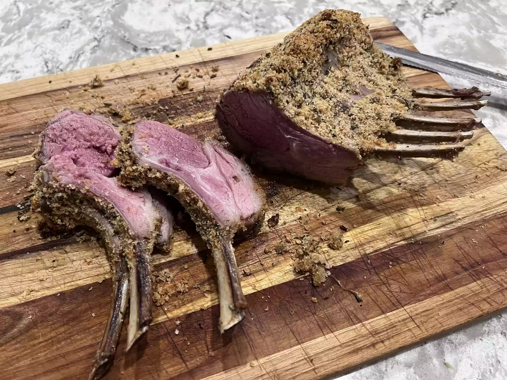

Roasted Rack of Lamb

Description
Indulge in the succulent perfection of this roasted rack of lamb, where tender meat meets a flavorful herb crust for a culinary masterpiece that's sure to delight your senses.
Ingredients
- ½ cup fresh bread crumbs
- 2 tablespoons minced garlic
- 2 tablespoons chopped fresh rosemary
- 1 teaspoon salt
- ¼ teaspoon black pepper
- 2 tablespoons olive oil
- 1 7-bone rack of lamb, trimmed and frenched
- 1 teaspoon salt
- 1 teaspoon black pepper
- 2 tablespoons olive oil
- 1 tablespoon Dijon mustard
Directions
- Preheat the oven to 450° F (230° C). Move the oven rack to the center position.
- Combine bread crumbs, garlic, rosemary, 1 tablespoon salt, and ¼ teaspoon pepper in a small bowl; stir in 2 tablespoons olive oil to moisten the mixture. Set aside.
- Season rack of lamb all over with 1 teaspoon salt and 1 teaspoon pepper. Heat 2 tablespoons olive oil in a large heavy oven-proof skillet over high heat. Add lamb and sear on all sides, about 1 to 2 minutes: set lamb aside for a few minutes. Brush lamb with mustard and roll in bread crumb mixture until evenly coated. Cover the ends of the bones with foil to prevent charring.
- Arrange the breaded rack of lamb bone-side down in the same skillet. Roast in preheated oven for 12 to 18 minutes for medium; an instant-read thermometer inserted into the center should read at least 130° F (54° C), or continue to cook to desired doneness. Remove lamb from the skillet and allow to rest for 5 to 7 minutes, loosely covered with foil, before carving between the ribs.